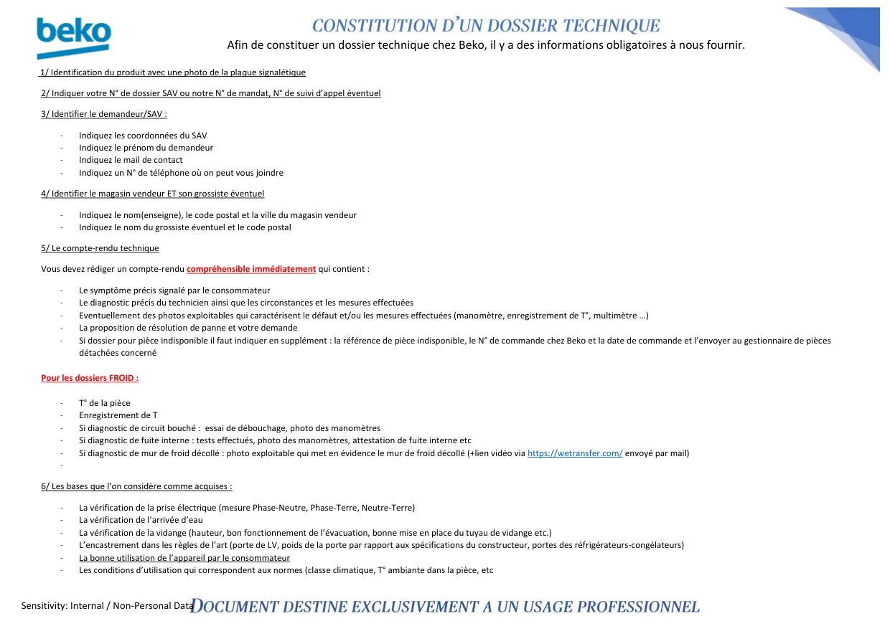

NOTICE — envoi de fichiers

Afin de constituer un dossier technique chez Beko, il y a des informations obligatoires à nous fournir.Sensitivity: Internal / Non-Personal Data1/ Identification du produit avec une photo de la plaque signalétique2/ Indiquer votre N° de dossier SAV ou notre N° de mandat, N° de suivi d’appel éventuel3/ Identifier le demandeur/SAV :-Indiquez les coordonnées du SAV-Indiquez le prénom du demandeur-Indiquez le mail de contact-Indiquez un N° de téléphone où on peut vous joindre4/ Identifier le magasin vendeur ET son grossiste éventuel-Indiquez le nom(enseigne), le code postal et la ville du magasin vendeur-Indiquez le nom du grossiste éventuel et le code postal5/ Le compte-rendu techniqueVous devez rédiger un compte-rendu compréhensible immédiatement qui contient :-Le symptôme précis signalé par le consommateur-Le diagnostic précis du technicien ainsi que les circonstances et les mesures effectuées-Eventuellement des photos exploitables qui caractérisent le défaut et/ou les mesures effectuées (manomètre, enregistrement de T°, multimètre …)-La proposition de résolution de panne et votre demande-Si dossier pour pièce indisponible il faut indiquer en supplément : la référence de pièce indisponible, le N° de commande chez Beko et la date de commande et l’envoyer au gestionnaire de piècesdétachées concernéPour les dossiers FROID :-T° de la pièce-Enregistrement de T-Si diagnostic de circuit bouché : essai de débouchage, photo des manomètres-Si diagnostic de fuite interne : tests effectués, photo des manomètres, attestation de fuite interne etc-Si diagnostic de mur de froid décollé : photo exploitable qui met en évidence le mur de froid décollé (+lien vidéo via https://wetransfer.com/ envoyé par mail)-6/ Les bases que l’on considère comme acquises :-La vérification de la prise électrique (mesure Phase-Neutre, Phase-Terre, Neutre-Terre)-La vérification de l’arrivée d’eau-La vérification de la vidange (hauteur, bon fonctionnement de l’évacuation, bonne mise en place du tuyau de vidange etc.)-L’encastrement dans les règles de l’art (porte de LV, poids de la porte par rapport aux spécifications du constructeur, portes des réfrigérateurs-congélateurs)-La bonne utilisation de l’appareil par le consommateur-Les conditions d’utilisation qui correspondent aux normes (classe climatique, T° ambiante dans la pièce, etc
1 / 1